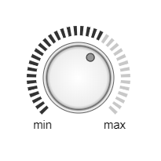

Home → Segment Array Volume Control
Volume Control is a graphical control for changing the volume or some other value (Fig. 1).

Fig. 1 - Volume Control with indicator in the form of segment array
The following scripts should be included in the <head> section:
To create an object, the main parameters are passed to the constructor function:
id - volume control identificator as a text string.
context - CanvasRenderingContext2D for drawing a volume control.
cx - X coordinate of the indicator center.
cy - Y coordinate of the indicator center.
r_in - indicator inner radius.
thickness - thickness of the indicator.
init_angle - the initial angle of the indicator in degrees. May take negative values.
angle - angle of the indicator in degrees.
The outer radius of the indicator r_out will be calculated automatically during the creation of the object.
Examples of using various properties and methods of the object.
min_value - minimum value of changing parameter.
max_value - maximum value of changing parameter.
value - current value of changing parameter.
speed - speed of change of the value when it is programmatically changed.active_index - index of the last active segment of the indicator.
SegmentArrayVolumeControl is a composite object. It includes:
knob - SegmentKnob.
segment_array - indicator in the form of SegmentArray.
segment_array_gradient - fill gradient. Type of value is SegmentGradient.
segment_array_background - fill color (applies if fill gradient is not specified).
segment_array_border_width - base segment border width.
segment_array_border_color - base segment border color.
segment_gradient - array segments fill gradient. Type of value is SegmentGradient.
segment_background - array segments fill color (applies if fill gradient is not specified).
segment_border_width - array segments border width.
segment_border_color - array segments border color.
active_segment_gradient - array active segments fill gradient. Type of value is SegmentGradient.
active_segment_background - array active segments fill color (applies if fill gradient is not specified).
active_segment_border_width - array active segments border width.
active_segment_border_color - array active segments border color.
Label of the limit position of the knob corresponding to the minimum value of the changing parameter
min_text - label text.
min_font - text font.
min_color - text color.
min_border_width - text border width.
min_border_color - text border color.
min_init_x - initial X coordinate of the label.
min_init_y - initial Y coordinate of the label.
min_offset_x - X offset of the label.
min_offset_y - Y offset of the label.
Label of the limit position of the knob corresponding to the maximum value of the changing parameter
max_text - label text.
max_font - text font.
max_color - text color.
max_border_width - text border width.
max_border_color - text border color.
max_init_x - initial X coordinate of the label.
max_init_y - initial Y coordinate of the label.
max_offset_x - X offset of the label.
max_offset_y - Y offset of the label.
visible - value true ensures object visibility.
in_progress - flag takes the value true during the animation.
build() - performs basic calculations of the shape and style of object, taking into account the specified properties and flags.
calcLabels() - determines the initial position of the captions depending on the parameters of the base segment of the indicator.
draw() - draws an object.
instanceCopy() - creates an independent copy of the object.
angleToValue(angle) - function of calculating the value of the changing parameter depending on the angle of rotation of the knob.
valueToActiveIndex(value) - function of calculating the active index of the volume indicator depending on the current value of the changing parameter.
setValue(value) - function of setting the current value of the changing parameter.
changeValue(value, speed, delay) - animation of changing the current value to value with speed after delay.
catchKnob(e) - grabbing the knob by left clicking on it.
The method is set as a listener for the mousedown event on the canvas.
rotateKnobByMouseMovement(e) - rotating the grabbed knob by mouse move.
The method is set as a listener for the mousemove event on the canvas.
rotateKnobByMouseWheel(e) - rotating the grabbed knob by mouse wheel.
The method is set as a listener for the wheel event on the canvas.
releaseKnob() - the grabbed knob is released by releasing the left mouse button.
The method is set as a listeners for the mouseup and mouseout events on the canvas.
removeKnotListeners() - removal of the canvas event listeners of the same name emanating from the child object of the SegmentKnob type.
The method must be called every time after executing the build() method of a child object of type SegmentKnob.
Events triggered by a SegmentArrayVolumeControl are implemented using a CustomEvent.
In the detail.volume_control field, a link to the object itself is passed.
segment-array-volume-control-changed - state of the object is changed.
Home → Segment Array Volume Control